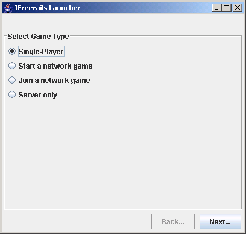
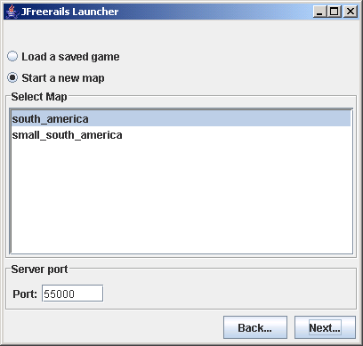
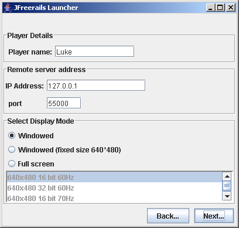
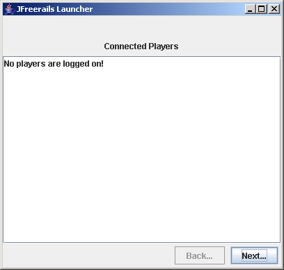
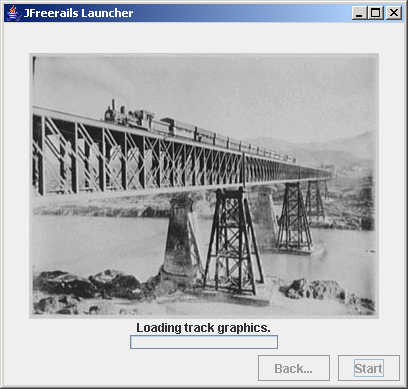

Panel 1: Select Game Type
|
Selection |
Next Screen |
|
Single Player |
Select Map (without server port input box) |
|
Start a network game |
Select Map (with server port input box) |
|
Join a network game |
Client details (with remote server details showing) |
|
Server only |
Select Map (with server port input box) |

Panel 2: Select Map (and server details)
|
Selection |
Next Screen |
|
Single Player |
Client details (without remote server details showing) |
|
Start a network game |
Client details (without remote server details showing) |
|
Server only |
Connected players |

| Condition |
Message or result |
When checked |
|---|---|---|
| No saved game available. |
The item "Load a saved game" should be disabled |
When the panel is created. |
| Port field does not contain a number between, inclusive 0 and 65535 |
"A valid port value is between between 0 and 65535." and disable "next" button. |
As text is entered. |
| " Start a new map" is selected but no map is selected." |
"Select a map". The "next" button should be disabled. |
When the radio button selection changes and when the selected map in the map list changes. |
| Can't start server on specified port |
Use the message from the exception. The next button should still be enabled. |
When the next button is pressed. |
Panel 3: Client details (and remote server details).
|
Selection |
Next Screen |
|
Single Player |
Progress bar |
|
Start a network game |
Connected players |
|
Join a network game |
Progress bar |

| Condition |
Message or result |
When checked |
|---|---|---|
| The " Player name" field is empty. |
" Enter a player name" and disable " next" button. |
As text is entered. |
| Port field does not contain a number between, inclusive 0 and 65535 |
" A valid port value is between between 0 and 65535." and disable " next" button. |
As text is entered. |
| " Full screen" is selected but no map is selected." |
" Select a display mode" . The next button should be disabled. |
When the radio button selection changes and when the selected display-mode in the display-mode list changes. |
| The " IP address" field is empty. |
" Enter the address of the server" and disable " next" button. |
As text is entered. |
| Can't resolve host. |
"Can't resolve host." |
When next button is pressed. |
| Can't connect to server. |
" Can't connect to server." |
When next button is pressed. |
Panel 4: Connected players.

Panel 5: Progress Bar
